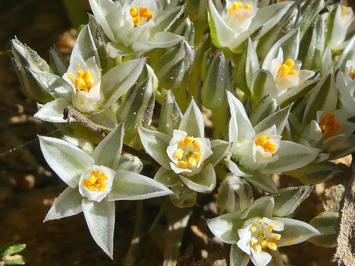

Limeaceae
(No widely accepted common name)
Limeaceae is a small family of dicotyledonous flowering plants in the order Caryophyllales, comprising herbs or subshrubs primarily found in Africa and Australia. Recently segregated from Molluginaceae, the family is characterized by often glandular leaves, small flowers with petaloid sepals, distinct carpels, and fruit typically splitting into segments (mericarps).
Overview
The Limeaceae family includes 2 genera, Limeum and Macarthuria, with approximately 20-25 species in total. These plants are annual or perennial herbs or subshrubs, often adapted to dry or sandy environments. Limeum species are primarily found in southern and eastern Africa, with one species extending to South Asia. Macarthuria is endemic to Australia.
Limeaceae was recognized as a distinct family in the APG III system (2009), separating these genera from the Molluginaceae based on molecular phylogenetic data. Members often have simple leaves that may be alternate, opposite, or appear whorled, and are sometimes covered in glandular hairs. The flowers are small, typically with 5 petal-like sepals and often lacking true petals (or having small, staminode-like structures). A key feature is the gynoecium, which consists of several carpels that are either completely separate (apocarpous) or fused only at the base. The fruit typically splits into individual, one-seeded segments (mericarps).
Unlike most families in the Caryophyllales order, Limeaceae (along with Molluginaceae and Caryophyllaceae) lacks betalain pigments and produces anthocyanins instead. The family has little economic importance but is significant for understanding the evolutionary relationships within the diverse Caryophyllales order.
Quick Facts
- Scientific Name: Limeaceae Shipunov ex Reveal
- Common Name: (None widely accepted)
- Number of Genera: 2 (Limeum, Macarthuria)
- Number of Species: Approximately 20-25
- Distribution: Southern & Eastern Africa, South Asia (one sp.), Australia
- Evolutionary Group: Eudicots - Core Eudicots - Superasterids - Caryophyllales
Key Characteristics
Growth Form and Habit
Annual or perennial herbs or subshrubs, sometimes woody at the base. Often glandular-hairy or papillose.
Leaves
Leaves are simple, alternate, opposite, or appearing whorled or fascicled, linear to obovate or spathulate. Margins are entire. Stipules may be present (small, scarious) or absent.
Inflorescence
Flowers are borne in terminal or axillary cymose inflorescences, sometimes appearing umbel-like or fascicled (clustered).
Flowers
Flowers are small, bisexual or sometimes unisexual, actinomorphic (radially symmetrical). Key features include:
- Perianth: Usually consists of a single whorl of (4-) 5 persistent, often petaloid (petal-like) sepals, which are typically free or slightly fused at the base, often white, greenish, or pinkish.
- Petals: True petals are often absent. Sometimes small, scale-like or linear structures are present, alternating with the sepals, which may be interpreted as petals or staminodes.
- Androecium: Stamens number 5-10 (sometimes more), free or shortly fused at the base.
- Nectar Disc: Often absent, or present as an inconspicuous ring.
- Gynoecium: Ovary is superior, composed of (1-) 2-5 (-7) carpels that are usually distinct (apocarpous) or fused only at the base. Each carpel typically contains 1 ovule (basal placentation). Styles are distinct, 1 per carpel, often short.
Fruits and Seeds
The fruit is typically a schizocarp that splits into indehiscent, one-seeded segments (mericarps, often nutlets or achenes). Less commonly, it may be a capsule or utricle. Seeds have endosperm and often perisperm.
Chemical Characteristics
The family lacks betalain pigments, producing anthocyanins instead (similar to Molluginaceae and Caryophyllaceae, but unlike most other Caryophyllales). Saponins may be present.
Field Identification
Identifying Limeaceae involves recognizing its habit, flower structure with petaloid sepals, and distinct carpels/fruit type:
Primary Identification Features
- Habit: Herbs or subshrubs, often glandular, typically in dry regions (Africa/Australia).
- Leaves: Simple, alternate/opposite/whorled.
- Flowers: Small, actinomorphic, with 5 petaloid sepals (white/greenish/pinkish).
- Petals: Usually absent or minute/scale-like.
- Gynoecium: Carpels distinct or basally fused (apocarpous/nearly so), superior.
- Fruit: Usually a schizocarp splitting into 1-seeded segments (mericarps).
- Pigments: Lacks betalains (flowers not bright magenta/yellow like many Caryophyllales).
Secondary Identification Features
- Stamens: 5-10 or more.
- Inflorescence: Cymes or clusters.
- Habitat: Often sandy or disturbed soils in arid/semi-arid areas.
Seasonal Identification Tips
- Flowering/Fruiting Season: Varies with rainfall patterns in their native habitats. Small flowers and splitting fruits are key.
- Vegetative State: Habit and leaf arrangement can be suggestive, but flowers/fruits are often needed for confirmation, especially to distinguish from Molluginaceae.
Common Confusion Points
Limeaceae can be confused with other families in Caryophyllales or superficially similar herbs:
- Molluginaceae (Carpetweed family): Very similar in habit and flower structure (petaloid sepals, often absent petals, superior ovary). Limeaceae was segregated from it. Distinguishing features can be subtle and sometimes require molecular data or detailed examination (e.g., presence of petals/staminodes, specific fruit dehiscence, pollen structure). Molluginaceae also lacks betalains.
- Caryophyllaceae (Carnation family): Usually have opposite leaves, flowers typically with true petals (often notched), syncarpous ovary (carpels fully fused) with free-central placentation, and fruit usually a capsule opening by teeth. Lacks betalains.
- Aizoaceae (Ice Plant family): Often succulent, flowers frequently have numerous petal-like staminodes, syncarpous ovary (often inferior or half-inferior), fruit often a hygrochastic capsule. Usually possesses betalains.
- Phytolaccaceae (Pokeweed family): Often have racemes of flowers with petaloid sepals and no petals, but typically have a syncarpous ovary (carpels fused, at least partially) that develops into a berry. Possesses betalains.
Field Guide Quick Reference
Look For:
- Herbs/subshrubs (often glandular)
- Leaves simple (alt/opp/whorled)
- Flowers small, 5 petaloid sepals
- Petals absent or minute
- Carpels distinct or basally fused
- Fruit a schizocarp (splitting segments)
- Lacks betalains
Key Variations:
- Leaf arrangement
- Presence/absence of stipules
- Number of carpels/mericarps (2-7)
- Habit (annual vs. perennial)
Notable Examples
The family comprises two main genera.

Limeum africanum
(Various local names)
A common species of Limeum found in southern Africa. An annual or perennial herb, often glandular, with variable leaf shapes (linear to obovate) and small white or greenish flowers with 5 petaloid sepals. Fruit splits into 2 mericarps.

Limeum viscosum
(Sticky Limeum)
Another African species, often characterized by its sticky glandular hairs. Subshrub or herb with small flowers typical of the genus.

Macarthuria australis
(Various local names)
Represents the Australian genus Macarthuria. Perennial herbs or subshrubs, often with wiry stems and reduced leaves. Flowers are small, clustered, with petaloid sepals. Fruit typically a schizocarp or capsule.
Phylogeny and Classification
Limeaceae is placed in the large and diverse order Caryophyllales, which belongs to the Superasterid clade of core eudicots. This order is known for including many families adapted to stress tolerance (e.g., drought, salinity) and for the unique presence of betalain pigments in most (but not all) lineages.
Limeaceae was segregated from Molluginaceae based on molecular phylogenetic analyses. It represents one of the lineages within Caryophyllales that lacks betalain pigments, sharing this trait with Molluginaceae and the large family Caryophyllaceae. Molecular studies place Limeaceae within the "core Caryophyllales" group, often showing relationships to Molluginaceae, Caryophyllaceae, Physenaceae, and Asteropeiaceae, although its exact sister group relationship can vary between studies. It is clearly distinct from the betalain-containing clade (including Aizoaceae, Cactaceae, Amaranthaceae, etc.).
Position in Plant Phylogeny
- Kingdom: Plantae
- Clade: Angiosperms (Flowering plants)
- Clade: Eudicots
- Clade: Core Eudicots
- Clade: Superasterids
- Order: Caryophyllales
- Family: Limeaceae
Evolutionary Significance
Limeaceae, though small, contributes to understanding Caryophyllales evolution:
- Phylogenetic Relationships: Its recognition and placement help resolve the complex relationships within the core Caryophyllales, particularly among the lineages that lack betalain pigments.
- Pigment Evolution: Its lack of betalains (presence of anthocyanins) is significant for studying the evolution of pigment pathways within Caryophyllales, where betalains are otherwise predominant.
- Biogeography: Its disjunct distribution between Africa and Australia suggests ancient Gondwanan origins or subsequent dispersal events.
- Morphological Traits: The combination of petaloid sepals, often absent petals, and apocarpous/nearly apocarpous gynoecium represents a specific character suite within the order.